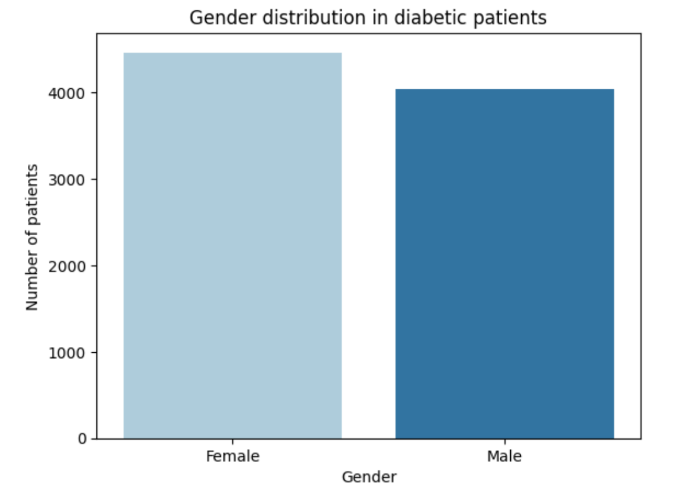
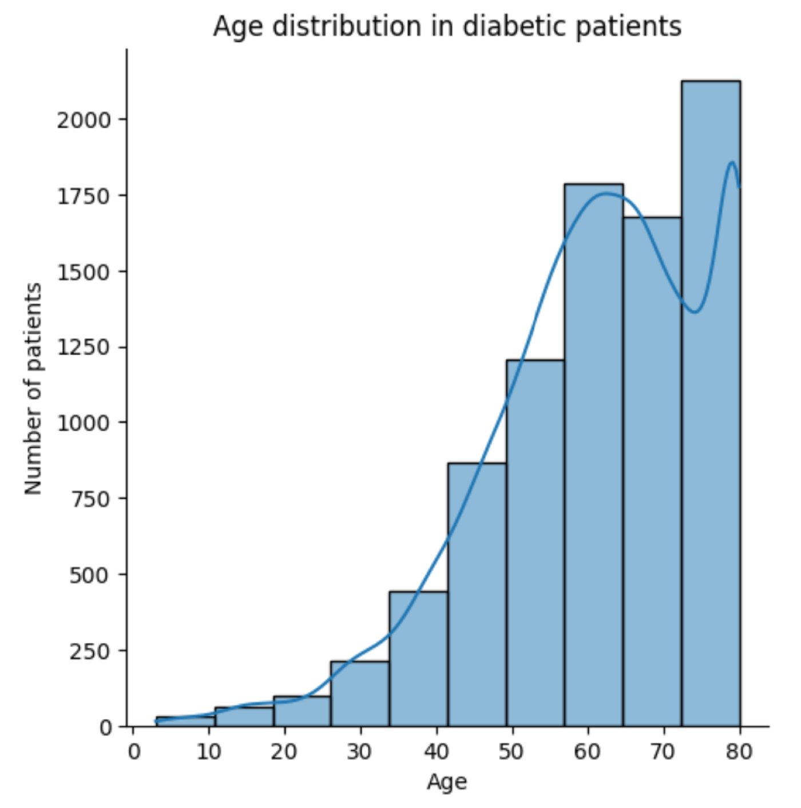
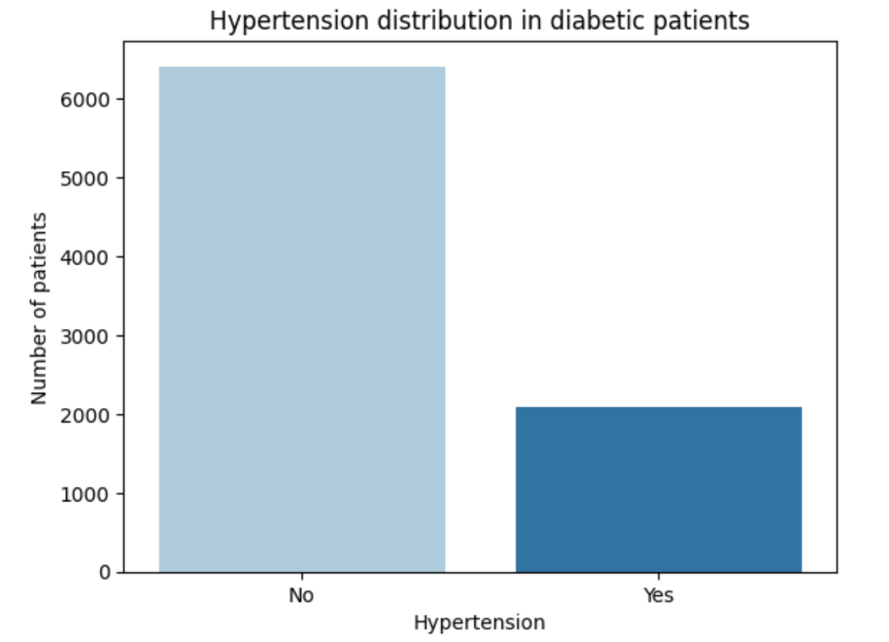

Dijabetes tip 1 nastaje autoimunom destrukcijom beta ćelija gušterače, što dovodi do nedostatka insulina. Javlja se uglavnom prije 30. godine života i zahtijeva doživotnu insulinsku terapiju. Simptomi uključuju pojačano žeđanje, mokrenje i gubitak težine.
Tip 2 dijabetesa je najčešći oblik (90% slučajeva) i povezan je s inzulinskom rezistencijom i najčešće se javlja u odraslih (nakon 40. godine) , ali se pojavljuje i kod mlađih osoba. Povezan je s pretilošću i lošom prehranom. Liječenje uključuje promjene životnog stila, lijekove i ponekad inzulin.
Gestacijski dijabetes javlja se tijekom trudnoće zbog hormonskih promjena koje uzrokuju rezistenciju na inzulin i obično nestane nakon poroda, ali povećava rizik od razvoja dijabetesa tipa 2 u budućnosti.
Napomena: Ovo nije medicinska dijagnoza!
Za izradu ovog modela za predviđanje rizika od dijabetesa koristio se skup podataka koji sadrži 100 000 primjeraka o pacijentima.
Skup podataka za predviđanje dijabetesa je zbirka medicinskih i demografskih podataka pacijenata, zajedno s njihovim statusom dijabetesa (pozitivnim ili negativnim). Podaci uključuju značajke kao što su dob, spol, indeks tjelesne mase (BMI), hipertenzija, bolesti srca, povijest pušenja, razina HbA1c i razina glukoze u krvi.
Prikaz distribucije dijabetesa u skupu podataka.

Spol se odnosi na biološki spol pojedinca, što može utjecati na njegovu sklonost dijabetesu. Slika prikazuje distribuciju spola među pacijentima s dijabetesom, što može pomoći u razumijevanju kako dijabetes utječe na različite spolove.
Dob je važan faktor jer se dijabetes češće dijagnosticira kod starijih osoba. Prikaz distribucije dobi pacijenata u skupu podataka, što može pomoći u razumijevanju demografskih čimbenika povezanih s dijabetesom.
Razina glukoze u krvi odnosi se na količinu glukoze u krvotoku u određenom trenutku. Visoke razine glukoze u krvi ključni su pokazatelj dijabetesa. Slika prikazuje distribuciju razina glukoze u krvi među pacijentima.

BMI (indeks tjelesne mase) je mjera tjelesne masti na temelju težine i visine. Više vrijednosti BMI-a povezane su s većim rizikom od dijabetesa. Raspon BMI-a u skupu podataka je od 10,16 do 71,55. BMI manji od 18,5 je pothranjenost, 18,5-24,9 je normalna težina, 25-29,9 je prekomjerna težina, a 30 ili više je pretilost. Slika prikazuje distribuciju indeksa tjelesne mase (BMI) među pacijentima s dijabetesom, ističući povezanost između prekomjerne težine i rizika od dijabetesa.

Razina HbA1c (hemoglobina A1c) mjera je prosječne razine šećera u krvi osobe tijekom posljednja 2-3 mjeseca. Više razine ukazuju na veći rizik od razvoja dijabetesa. Uglavnom više od 6,5% razine HbA1c ukazuje na dijabetes. Slika prikazuje distribuciju razina HbA1c među pacijentima s dijabetesom.

Hipertenzija je medicinsko stanje u kojem je krvni tlak u arterijama trajno povišen. Slika prikazuje distribuciju hipertenzije među pacijentima s dijabetesom, naglašavajući važnost upravljanja krvnim tlakom u ovoj populaciji.
Bolest srca je još jedno medicinsko stanje koje je povezano s povećanim rizikom od razvoja dijabetesa. Slika prikazuje distribuciju bolesti srca među pacijentima s dijabetesom, što ukazuje na povezanost između dijabetesa i kardiovaskularnih bolesti.

Povijest pušenja također se smatra faktorom rizika za dijabetes i može pogoršati komplikacije povezane s dijabetesom. U skupu podataka ima 6 kategorija: trenutni pušač, bivši pušač, trenutno ne pušač, nikada, ikada i ne zna se. Slika prikazuje distribuciju povijesti pušenja među pacijentima s dijabetesom, ističući utjecaj pušenja na rizik od razvoja dijabetesa.